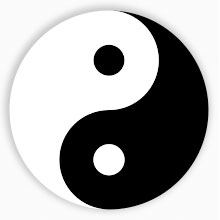
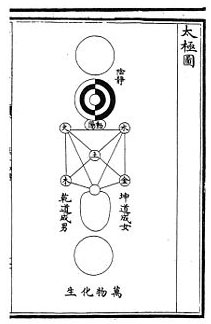
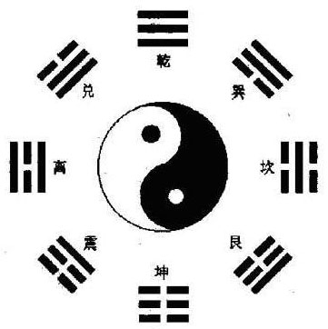
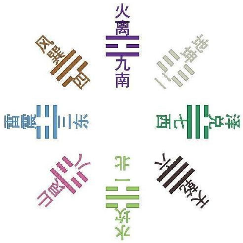
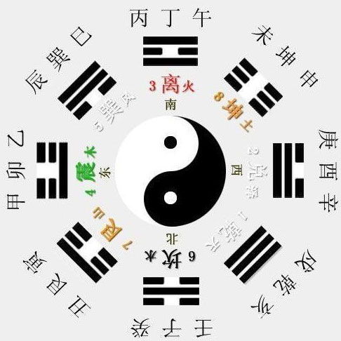

首页
首页
- 道教历史

道教是中国的传统宗教，它的历史远可以追溯到先秦时期，而正式形成于东汉的中后期。与世界其它大型宗教不同，道教并非是一人一时一地所创所生，乃中国历代各地不同的文化、思想相结合而成之宗教。
- 道教渊源
道教思想渊源杂而多端，与中国传统文化的诸多领域都有血肉相连的密切关系。道教有三大基本源头：鬼神崇拜、方仙信仰和黄老道家。
- 三大基本源头
鬼神巫术崇拜。上古时代，人们将日月星辰、河海山岳和祖宗先贤视为神灵而加以祭祀，祈祷膜拜。黄帝时期有了对于天帝的祭祀，其内容有“封禅告天”、“郊祀上帝”、“接万灵于明廷”等。这种由来已久的鬼神崇拜，到周朝时形成了一个天神、地祗和人鬼的神灵系统和敬天法祖的信仰传统。道教不仅承袭了这种鬼神崇拜思想，而且将这个神灵系统纳入神仙体系。与鬼神崇拜密切联系的巫术信仰也由来已久，古人认为，卜筮可以决疑惑、断吉凶；巫觋能够沟通鬼神，转告神旨；巫术可以为人们祈福镶灾、医治疾病。上古巫术直接被战国神仙方士承袭。
神仙方术信仰。战国时期，北方燕齐和南方荆楚等地出现了宣传长生成仙的神仙方士，形成了诸子百家中的神仙家（亦称方仙道）。方仙道宣扬长生成仙信仰，把黄帝和老子作为得道成仙的楷模而奉之为神仙祖师；提出了寻求仙境仙人和不死仙药的主张，并实践祠灶祭神、行气辟谷、导引吐纳等修炼方术；尤其是倡导炼丹术，把服食丹药作为成仙途径。荆楚地区的《庄子》和《楚辞》等对神灵仙境的屡见不鲜的描述，给神仙方士很大的启迪和思考；燕齐地区流传着海上蓬莱、瀛洲、方丈三神山的传说，驱动着帝王和方士前往寻访。方仙信仰和方技术数被道教继承，方士逐渐演化为道士。
道家黄老学说。道家哲学是道教最重要的思想源泉，老子把“道”作为宇宙的本体，万物的规律，是超越时空的神秘“存在”，与宗教思想十分接近。道教便把“道”视为天地宇宙、阴阳五行、万物生灵的本源，以此为基点建立道教神学理论体系；并且从宗教神秘主义的角度把“道”人格化，将老子看作“道”的化身。道家注重修真养生，追求长生久视，老子、庄子提出清静无为、见素抱朴、专气致柔、心斋坐忘、导引守一等修道养生方法。道家的养生思想和神秘主义所形成的修道成仙思想成了道教的核心，教理教义和修炼方术都围绕着这个核心展开。
- 太極圖

太极图是指代表阴阳（太极）思想的中国符号，有时也泛指历史上其他文化中所使用的与中国太极图相似的几何图案。这类符号标志大部分是由两个不同颜色的半圆形泪珠状曲线组成，稱為黑白陰陽双魚。以太極圓直徑的一半作兩個圓，太極圓被分成四部分，每兩部分組合起來，便成為一對陰陽双魚。或者是由一个反S型曲线将一个圆分成两部分，每一部分都标记有一个不同颜色的圆点。太极图一般由黑和白两种颜色组成。在西元前五世紀凯尔特艺术和古典时代晚期西罗马帝国军服的纹章中都有这种类型的符号。
- 道教的太极图

道教的太极图据传是宋朝的陈抟所创。原叫“无极图”。据史书记载，陈抟曾将“太极图”传给其学生种放，种放以之分别传穆修、李溉等人，后来穆修将“太极图”传给周敦颐。周敦颐写了《太极图说》加以解释。现在我们看到的太极图，就是周敦颐所传的。
如今的太极图还是一些武术，特别是太极拳的标志之一。韩国国旗的图案也是源自太极图。
- 八卦图
八卦记忆口诀：
乾三连、坤六断；离中虚、坎中满；震仰盂、艮覆碗；兑上缺，巽下断。
——这是先天八卦图，与下面二个后天八卦图.在方位上有区别。我们现在一般是用后天八卦，有时候也看情况可以二者互用。
 - 澳门正壬法壇
- 马来西亚道教联合总会